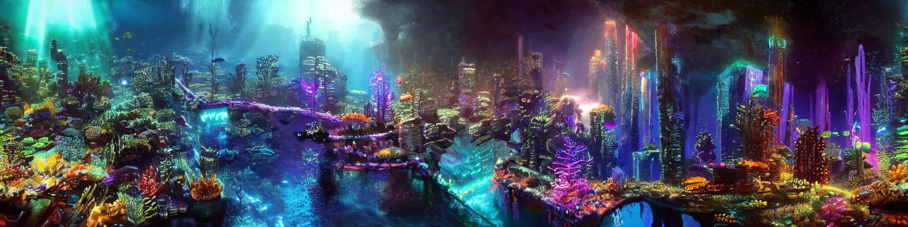
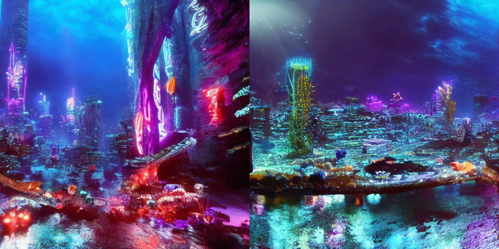
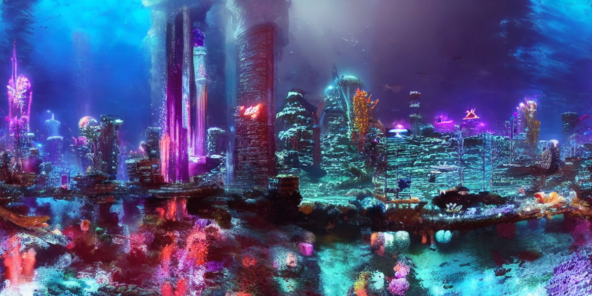
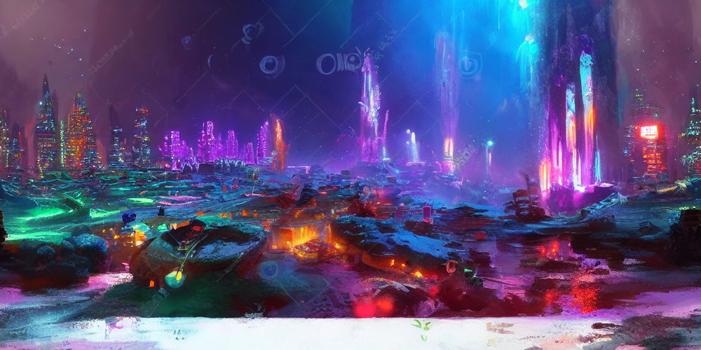
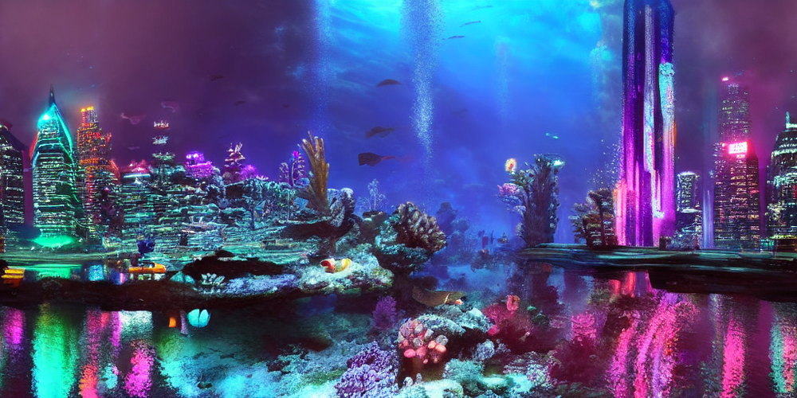
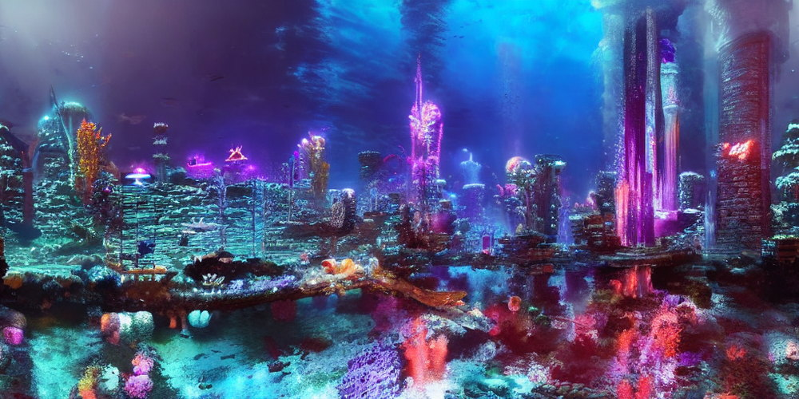

Ask SD v1.5 directly for 2048×512 and it paints four 512-ish scenes glued together — duplicated skylines, warped geometry. Instead: keep one shared latent canvas, cut overlapping 64×64-latent (512 px) windows, run one ordinary DDIM step on each, and average every window's opinion back into the canvas at every step.
So I never concatenate. The sampler takes K conditioning branches, each with its own embedding per window; one UNet call carries the unconditional pass plus all K branches:





| ink_wash_mtns + dragon_spire | 14.63 | 1.36 |
| fantasy + medieval | 11.91 | 1.11 |
| volcanic_lava + flooded_city | 8.51 | 0.78 |
| cyberpunk + underwater | 6.39 | 0.97 |
| …12 runs, mean | 7.94 | 1.05 |
Two Colab sessions, different days, same seeds → byte-identical PNGs (MD5 f737a887…, 16f0c451…, 8a6e4445…). Initial noise is drawn on the CPU generator, whose RNG is identical across GPUs.
diffusers' deprecated panorama pipeline scatters windows by canvas row index, so circular padding breaks on any canvas taller than one window. Mine never addresses a window by canvas coordinates — which is why the 768-tall worlds work.
Tokenisation, not attention, is what kills fused prompts — measuring the prompt beat staring at the image. Composition is seed-sensitive, so the notebook renders several seeds and ranks them on a worst-of-both-themes CLIP score.
| SD v1.5 (fp16) stable-diffusion-v1-5/ stable-diffusion-v1-5 |
Generates every submitted pixel. Ships its own CLIP ViT-L/14 text encoder + VAE; scheduler swapped to DDIM. |
| CLIP ViT-L/14 openai/clip-vit- large-patch14 |
Scores finished images only — generates nothing. The allowed "pretrained reward model" case; switchable off. |
| Source images | Zero of the 10 allowed — no image input, no upload step, no data.zip, no training of any kind. |
CLIP scores six square crops taken around the loop; a theme's score is its best crop and the candidate's score is the worst of the two themes — which punishes a render that quietly dropped one. Seam ratio > 4 is disqualified. Every run writes a JSON log with checkpoint id, prompts, seeds and scores.
| Canvas | 2048 × 512 · also 1536 × 768 |
| Window / stride | 64 × 64 latents / 16 cells |
| Sampler | DDIM · 50 steps · CFG 7.5 |
| Windows per step | 16 · cells covered ≥ 4× |
| Precision | fp16 UNet · fp32 accumulator |
| Fusion | compose λ 0.5 · regions σ 2.0 |
| Decode | ± 8 latent cols wrapped |
| Control render (1024×512, 30 st.) | 32 – 36 s |
| …same render, compose | 49 – 57 s |
✓ Every pixel from SD v1.5
✓ No SDXL / FLUX, no third-party checkpoint, LoRA or DreamBooth
✓ No training or fine-tuning
✓ Zero source images → no data.zip
✓ CLIP used only as a judge
✓ Single .ipynb, end to end on a Colab T4, all cell outputs saved
✓ Every seed fixed and logged; CPU-drawn noise reproduces across GPUs
✓ Every label drawn with PIL on finished pixels — no text asked of the model
✓ Static PNG output